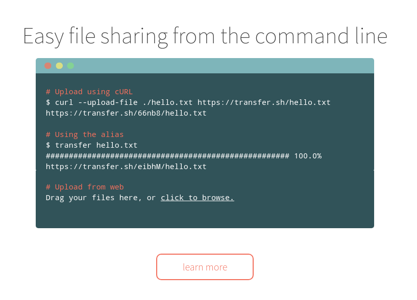

<div class="post-container flexflow-top-down"><div class="post-content"><div class="header flexflow-left-right" id="z-transfer-demo"><div class="back_button"><a href="#proj_home"><i class="fas fa-backward"></i></a></div><div class="title"><div>z transfer demo</div></div></div><div class="meta"><div class="meta-content"><span><i class="fas fa-calendar-alt"></i> Mar 9, 2019</span></div><div class="meta-tags"><span><i class="fas fa-tags"></i> tag1 tag2 tag3</span></div><div class="meta-content"><span><i class="fas fa-clock"></i> 2 min</span></div></div><div class="caption_img"><p>appium beahve relation</p></div><h3>What is this ?</h3><p>transfer.sh is a simple file sharing service. Users can simply share files by uploading files to their web site. This simple script can go a step further by compress files with password and upload it to transfer.sh and grab the link return from transfer.sh by using a single command.</p><h3>requirement:</h3><ul><li>ubuntu</li><li>python</li><li>pwgen</li><li>curl</li><li>p7zip-full</li></ul><h3>How to install:</h3><ul><li>install pwgen pip3 install pwgen</li><li>open ~/.bashrc or ~/.zshrc</li><li>paste the following source into it</li><li>logout from linux -> login</li><li>done</li></ul><h3>Source</h3><a class="gist_link" href="https://gist.github.com/louiscklaw/f9a49076aff09449a5e5e0078b30ce65">gist link to source</a><pre><code class="language-py">ztransfer () {
   python $argv[0] -c '\
   import sys, subprocess, hashlib;\
   BLOCKSIZE = 65536;\
   hasher = hashlib.sha1();\
   sTarget = sys.argv[1];\
   sTarget7z = "%s.7z" % sTarget;\
   from pwgen import pwgen;\
   sUnzipPassword=pwgen(50, 1, symbols=False, capitalize=False);\
   cmdCompress = ["7z", "a", sTarget7z, sTarget, "-mx9","-p%s" % sUnzipPassword];\
   cmdUploadCurl = ["curl", "--upload-file","./%s" % sTarget7z, "https://transfer.sh/%s" % sTarget7z];\
   subprocess.check_output(cmdCompress, stderr=subprocess.STDOUT);\
   sShareLink = subprocess.check_output(cmdUploadCurl);\
   print "-"*80;\
   print "unzip password       : %s" % sUnzipPassword;\
   print "ShareLink            : %s" % sShareLink;\
   print "curl command         : curl -LO %s" % sShareLink;\
   print "mac extract command  : 7z e %s" % sTarget7z ;\
   print "linux extract command: 7za e ./%s -p%s" % (sTarget7z, sUnzipPassword) ;\
   print "-"*80;\
   ' $argv[1]
}</code></pre><h3>How to use?</h3><ul><li>ztransfer <file_you_want_to_send></li><li>it return a link with transfer.sh</li></ul><a class="back_to_proj_home" href="#proj_home" style="width: 100%;"><i class="fa fa-arrow-left"></i> back to project home</a></div></div>